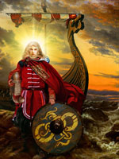

Бальдр ( "пан"), у скандинавській міфології юний бог з асів, улюблений син Одіна і Фрігге, богині землі і повітря. Прекрасного Бальдра називали мудрим і сміливим, а його любляча і ніжна душа випромінювала світло. Несподівано юнакові стали снитися зловісні сни, що передвіщали смерть. Стурбований Один осідлав свого восьминогого жеребця Слейпнірі і відправився в царство мертвих. Чаклунка-провидиця повідала йому, що Бальдр загине від руки власного брата, сліпого бога Хёда. Засмучений новиною, Один повернувся в Асгард, але його дружина Фригг придумала, як врятувати Бальдра. Богиня обійшла всі дев'ять світів і взяла клятву у всіх істот і речей, що вони не принесуть її синові шкоди. Винятком стала втеча омели, що не прийнятий нею до уваги. В Асгарді все, крім бога вогню Локі, раділи порятунку юного бога. Розлючений позбавленням Бальдра від небезпеки, Локі обернувся старою і відправився в покої Фрігге, де з'ясував, що омела клятву не давала.
І коли боги бавилися метанням копій і каменів в який став невразливим Бальдра, підступний Локі підсунув сліпому Хёду прут з омели. Втеча пробив груди Бальдра, і бог впав замертво. Фрігге спробувала визволити сина з царства мертвих. На її прохання Хермод відправився туди викуповувати Бальдра. Поки Хермод перебував у дорозі, тіла Бальдра і його дружини Нанни, яка померла від горя, перенесли на похоронну човен, підпалили і зіштовхнули в море. У нижньому світі відважний Хермод знайшов брата, який посів високе положення серед мертвих.
Цариця підземного світу Хель, донька Локі, погодилася відпустити Бальдра, якщо все живе і мертве в дев'яти світах стане оплакувати його. У всі кінці світу були послані гінці, і незабаром ридали навіть каміння. Лише стара велетень Тёкк відмовилася плакати, заявивши: "Нехай Хель залишиться те, що у неї є". Засмучені боги не відразу розпізнали в Тёкк злобного Локі. Так Бальдр назавжди залишився в царстві Хель. Міф про передчасну смерть світлоносного красеня-бога нагадує грецькі міфи про вмираючого і відроджується бога Адоніса. Скандинави вірили, що відродження Бальдра відбудеться після дня Рагнарек, коли з моря підніметься нова зелена земля.